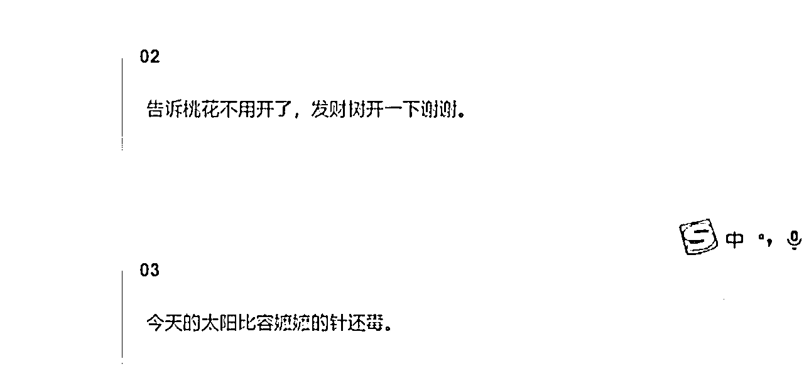

来源：https://o0yvn3o31a.feishu.cn/docx/XIfOdbuxAo6fevxCoeHcvcUgnvh
大家好，我是黄岛主！
最近刷公众号的时候，看到了一个不错的变现赛道，主要是有图有梗，然后分析观察了下发现这个赛道还挺热门的，很多公众号玩家都在做这个内容。因为我也第一次接触这个赛道，然后对比了几个流量大了公众号花了600多买了他们的课程简单学习了下。综合了下，主要就是发布文案和图片，并通过阅读量挣取收益。
来，我们先看下面图片上的这些公众号文章，可以看到就是简单的几张图，配上简单的几句文案，发布之后的阅读量都在好几万，而且这都是一些当下比较热门的文案，看完之后，很完美的吸引用户的关注，我当时就是被这个吸引人住的，然后我看完之后发现阅读量非常不错，如果有执行力都可以自己去做这种公众号，然后开通流量主做变现了。
案例如图所示：
那么废话不多说，具体拆解的内容，我分成了：项目介绍、账号注册、操作流程、变现方式，等四个方向吧，我和以往写的文章一样，图文并茂的展现出来，这样能更直观的去看拆解的内容！
一、注册公众号
我不知道还有圈友不知道公众号咋注册的吗？本来这个环节没打算拆解，但是考虑到很多小白圈友，我还是拆了下。所以，如果有圈友不知道怎么注册公众号的，可以先看下公众号注册方法和相关注意规则。
1、注册公众号规则
个人号(1个人只能用身份证注册1个且必须年满18)，个体户营业执照(可以注册2个公众号，其中一个需要认证才可以使用)，企业营业执照(可以注册50个公众号)请选择好自己需要的/开始注册。
2、如何注册公众号
手机版：应用商店搜索“订阅号助手”应用程序，在运营商店下载订阅号助手根据提示微信授权注册即可，进入注册页面之后需要输入公众号名字和头像。
名字设置需要填写未被注册的公众号名字，基本大众好记的名字都被注册了，页面需要设置未被注册的公众号名字才能继续下一步，注册结束后，就可以正常发文运营（以上只能个人号进行注册）。
网页版注册：
在浏览器输入微信公众号平台官网，选择订阅号，开始注册，请注意，每个邮箱只能只能使用一次，如果是企业号，可以选择163邮箱注册，百度搜索163，点进去后选择普通注册，一个手机号可以注册5个邮箱。
选择要注册的订阅号：个人/企业，按照提示操作
注册公众号时选择好自己的赛道，如：文案号/头像号/表情包等。
3、人员绑定
注册成功后，扫码进入公众号后台进行人员绑定，选择设置与开发，点击人员设置，绑定运营者微信，运营者必须关注这个公众号。然后输入微信号，点击邀请，对方同意后，即可绑定。
我们是建议：运营多个账号，可以找亲戚朋友注册后，绑定自己微信成为长期管理即可，一个微信可以绑定5个个人公众号为长期管理，如果搜不到，注意微信是否打开微信号搜索。
4、如何关闭水印
手机版订阅号助手选择设置，点击公众号水印，选择不添加水印，电脑端点击公众号，点击账号详情，点击功能设置，选择关闭水印即可。
5、设置头像
手机版：订阅号助手登录后，点击上图的红色框进行换头像。
电脑端：点击公众号，点击账号详情，点击圆形头像进行更换头像即可。
二、操作流程
我把一些操作流程做了简单的梳理，大家可以看下：
1、要学会排版和编辑方面的操作
这个是需要用到的排版工具插件是壹伴，是免费的。当然，市面上还有很多好用的排版工具，比如秀米，微小宝。
安装教程来看：
下载壹伴网址 https://yiban.io/?utm=0214_b
点击安装小插件，安装完成后自动弹出来让你添加，点击添加，或者点击手动安装，把下载好的小插件拖到浏览器里面，安装好后打开壹伴官网。https://yiban.io/dashboard/，登录自己的公众就可以在公众号后台使用壹伴插件
这个插件可以直接拆机的，采集方法看下：
1、去对标大号找一篇文章，比如拾句馆，文案解忧馆，短句文案馆，萌新文案馆，晨溪流等等，复制同行好看的文章链接在浏览器打开，点击“采集图文”就可以，后面实操部分会详细的拆解。
2、采集的文章直接会到公众号草稿箱，直接在文章的基础上修改，相当于得到了文章的所有格式和排版，自己只需要删减图文就可以了。
然后看下编辑器网址推荐：
135微信编辑器http://www.135editor.com/
i排版微信编辑器http://ipaiban.com/bianji.jsp
秀米编辑器https://xiumi.us/studio/v5#/tablet/for/new
这些后面都可以用到的编辑工具，大家也可以保存下。
2、图片素材的获取
我这里分享一些不错的静图素材，大家可以看看：
1、别样网⸺无版权高清生活方式类图片网站（需要注册一下）
http://www.ssyer.com/index_t_25_l_40.html
2、pexels⸺都是无版权的高清图，种类也很多，分辨率也高
https://www.pexels.com/
3、pixabay（皮克斯本）⸺无版权的高清图，种类多，图片全
https://pixabay.com/
4、微博，抖音，小红书，快手，堆糖，花瓣等等都可以。
GIF素材来看下：
1、soogif⸺各种表情包，素材也挺全的
http://soogif.com/
2、giphy⸺是一个国外的网站，偏欧美风格
https://giphy.com/
3、爱斗图⸺用表情包表达文章内容
http://adoutu.com/index
3、、搜狗微信搜索工具，https://weixin.sogou.com/
这个就是快速搜索想要查看的文章来源，方便后面我们去获取素材！
三、具体的实操拆解
下面拆解的是具体的实操内容了，基本上按照下面拆解的内容步骤，自己就可以去操作了，很简单的！
1、文案
关于文案，我们在抖音搜索朋友圈秒赞的句子或者文案都行，随便搜，找一些最新的，或者可以去评论区里面看看，有很多热门评论，可以直接截屏提取图片中的文字，放到备忘录里，整理好再放进去，一篇文章8、9句，也可以去小红书搜索。
2、图片
可以去小红书或者一些图片平台找好看的图片，比如说我们用一个小猫咪的，多找几个，可以直接保存，把下面的水印截掉。

或者用小红书文案也可以，如果不想图片带水印的话，点击右上角复制链接，打开微信，搜索轻抖去水印小程序，点开之后粘贴，去水印，直接点击下载，看个视频广告就可以了，把图片、文案传到电脑上去，还有文案。

3、排版
就是文案和图片找完之后来到微信公众号，找一些比较喜欢的对标，里面文字的排版，喜欢哪个排版，就点三个点，复制一下链接，复制完之后发到电脑上去，多找几个，喜欢哪种排版就去用哪一种。
可以多找几个，喜欢哪个就用哪个，把链接都发到电脑端，文案、图朋、排版链接抖在电脑上。也发上去，图纸放到电脑上去，然后去电脑上操作。
4、下载插件
壹伴是微信公众号的编辑器，打开之后，点击安装小插件，下面几张图片是整个具体的教程，可以去看一下。
打开之后点开官网的网址，然后在这里授权公众号添加就可以，需要操作公众号扫码，一定要是管理员的微信，不能是运营者的，运营者的扫码没有用。
左边工具栏里面，最下面，然后下面这里有一个，去微信公众平台，然后呢，去扫码登录一下公众号，登录完之后，点击图文消息。
下载小插件之后就会出现这个页面，点击右边有导入文章，把找到的同行比较好看的模板链接复制粘贴进去，文章就采集完了，作者改成我们自己的公众号名称，在下面去更改它的文案，多找一些文案，全部都弄好之后字体调一下，改成16、18，把最下面的名片图片删掉，有水印的要裁剪一下，没有水印的话就不用裁剪。
找图片的时候可以找同一个色系的，这样看起来会更加美观，把封面改一下，上传，封面尺寸调1:1，整体流程很简单，文案、图片去小红书里面找，把标题改一下，可以给它保存为草稿，点击这里有个发布，原创声明打开就可以发布了，可以定时发布，也可以立即发布，根据自己的选择。

基本上整体操作流程就是这样，很简单很粗暴，就是不知道效果如何，但是人家能培训肯定是有效果的，除非割韭菜了。感兴趣的圈友可以试试！
四、变现方式
来看先变现方式，这个是核心，基本上就是流量主变现，其他没啥了，下面具体看下吧：
1、开通流量主变现
开通条件：
公众号流量主是指在文章中间/底部插入广告卡片,读者阅读到卡片，产生收益的形式，读者点击卡片进入查看广告收益越多，越多人看到文章里的广告，收益就越多，开通条件：粉丝数≥500即可开通，只能在电脑端操作。
这个开通方法也很简单，找人刷500多个粉丝就行了，也很简单的，需要渠道我可以帮忙对接。
开通步骤：
登录微信公众平台一广告与服务一流量主一广告管理一公众号底部广告/公众号文中广告，公众号底部广告是指在文章末尾插入广告卡片，读者只有读完文章，看到广告才能产生收益，立即开通，确认，在设置选项里，还可以根据自身需求，随时开启/关闭广告位。
公众号文中广告是指在文章中间位置插入广告卡片，读者就算没读完你的文章，只要看到中间位置的广告也能产生收益。
步骤：点立即开通—确认，在设置选项里,除了随时开启/关闭广告位外，还可以选择智能插入和手动插入广告位置，以及选择插入广告的类型。
智能插入就是系统根据文章长度，默认选择文中广告位置，如果默认的位置不太好，可以手动设置文中广告的位置，增强阅读体验感，手动设置文中广告，在微信公众平台编辑页面找到，广告一底部/文中广告一手动插入一勾选商品目录一确认。

在文中插入广告，多多少少会影响阅读体验，但新手多赚钱才更有动力更文，大家看个人情况选择开通即可。
2、完善财务信息
开通流量主成功后，电脑端绑定银行卡，系统才能把收益结算到账户，准备身份证正反面，银行卡正面照片，银行卡账号，银行卡开户行，广告与服务一流量主一财务管理一立即完善,按提示步骤一步步去完成即可。
3、流量主收益查看，电脑端，广告与服务一流量主一概览/数据统计。
手机端：绑定完成后，直接打开流量主服务助手小程序，就可以查看到收益数据。
4、流量主收益结算
一般在次月1日和次月15日前（如遇法定节假日，将会推迟)，分别对上半月和下半月收入进行结算，在结算完成后3个工作日内，发送结算单到邮箱中。
5、常见违规行为
在评论区引导读者给你点击广告,或者把文章转到朋友圈让别人帮你点击广告卡片,都属于作弊行为。
一旦被系统发现，违规作弊收益会被清除，严重直接封禁或注销流量主功能，更多关于流量主的运营规范,可在广告与服务一流量主一公告消息,找到《微信广告流量主运营规范更新》，一定要认真读―读，避免踩坑。
另外，公众号流量主收入只是一个最基础的收入，公众号做起来，每个月还可以通过接广告变现，还可以开通橱窗带货，做知识付费等。这个大家可以多去研究下。
写在最后：
这些我们拆解的人家699的公众号有图有梗的课程，大家可以看看，如果你觉得还不错，可以自己实操看看。如果觉得这类拆解符合圈友，后面我还会拆解其他类型的副业项目。我们这边基本上经常付费学习别人的项目，看看一些新奇特的副业玩法。有问题，也可以一起交流哈！